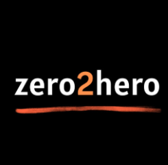

Zero2Hero Coding Academy
Online coding academy focused on helping students develop skills to build their own projects.
I have gather some of my past and on-going projects. I have started and led these projects.
Online coding academy focused on helping students develop skills to build their own projects.

Master’s thesis at CIMAT analyzing S&P 500 stock networks using spectral community detection to build reduced portfolios and evaluate their performance with real market data.

Developed automation and AI tools for CEIDE–UNAM, including scientometric pipelines, project classification, database normalization, and interactive dashboards to support evidence-based educational policy.

This PhD research at Université libre de Bruxelles develops quantitative models to optimize retiree decumulation strategies, analyzing factors like longevity risk and taxation to inform public policy and pension product design.

This platform facilitates secure video therapy sessions between psychologists and clients, integrating Zoom, Firebase, and OpenAI for scheduling and AI-driven summaries.